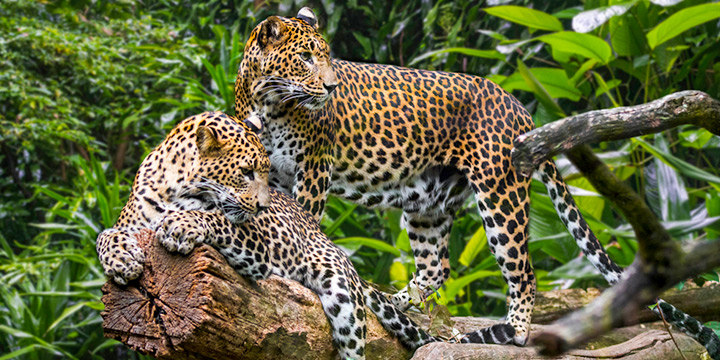

Introduction to Sri Lanka Wildlife
Sri Lanka boasts a rich and diverse wildlife that thrives in its various ecosystems. The island is renowned for its unique biodiversity, hosting a range of endemic species found nowhere else on Earth. The country's national parks and wildlife reserves, such as Yala, Wilpattu, and Sinharaja Forest Reserve, offer habitats for a variety of animals, including elephants, leopards, deer, and numerous bird species.Sri Lanka boasts a rich and diverse wildlife that thrives in its various ecosystems. The island is renowned for its unique biodiversity, hosting a range of endemic species found nowhere else on Earth. The country's national parks and wildlife reserves, such as Yala, Wilpattu, and Sinharaja Forest Reserve, offer habitats for a variety of animals, including elephants, leopards, deer, and numerous bird species. The coastal areas are home to marine life like dolphins and sea turtles, contributing to the country's vibrant ecological tapestry. Conservation efforts aim to protect these habitats and their inhabitants, ensuring the preservation of Sri Lanka's extraordinary wildlife heritage.

Udawalawe National Park
Udawalawe National Park, located in Sri Lanka, is renowned for its diverse wildlife and picturesque landscapes. Home to a large population of Asian elephants, the park offers visitors a chance to witness these majestic creatures in their natural habitat. The park also boasts a variety of bird species and other wildlife, making it a popular destination for nature enthusiasts and wildlife photographers
Minneriya National Park
Minneriya National Park in Sri Lanka is renowned for its diverse wildlife and the spectacular gathering of wild elephants during the dry season. The park encompasses a scenic reservoir, providing a crucial water source for numerous species. Visitors can witness a mesmerizing display of nature, featuring elephants, birds, and lush landscapes.
Galoya National Park
Gal Oya National Park in Sri Lanka is renowned for its stunning biodiversity and unique experiences. Established in 1954, it boasts the largest reservoir in the country, the Senanayake Samudraya. Visitors can embark on boat safaris to observe wildlife, including elephants swimming between islands, making it a must-visit destination for nature enthusiasts.